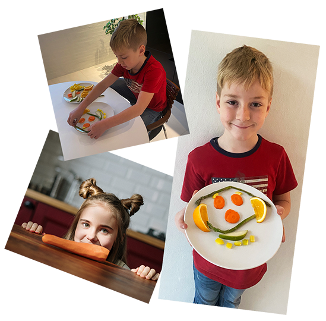

Har du også problemer med kræsne børn?
- Så giv dem madmodet tilbage!
Børn skal forbinde sund mad med noget positivt og ikke med noget negativt. Derfor er det vigtigt man ikke presser børn til at spise sundt, men i stedet for få dem til at spise det ved at lege med grøntsagerne f.eks - fægtning med gulerødder eller lege planteædende dinosaurer der spiser træer (broccoli), så de synes det er sjovt at spise.
Man kan også lave konkurrencer ved at se hvem der kan spise en Frugtspaghetti hurtigst, eller bruge omvendt psykologi ved at forælderen siger: “Du må ikke spise min røde peber”, og når forælderen så kigger tilbage, sidder barnet med den røde peber i munden og griner. Med disse lege kan det ende med at barnet vil spise grøntsagerne uden af brokke sig eller kommer og spørger om de ikke må få en gulerod helt af dem selv.

Gør aftensmaden sjov
- Og giv børnene madglæden tilbage
Når vi siger madro, tænker de fleste af os sikkert på, at der skal være så lidt støj som muligt ved bordet, når vi spiser sammen. Ofte oplever vi det modsatte, fordi vi voksne belærer børnene om, hvor meget man må spise, hvor længe man skal sidde ved bordet, at man skal spise op, sidde pænt osv.
Hvis vi i stedet fokuserer på, at vi skal have en stjernestund sammen som familie, når vi sidder ved bordet, at det er et sted og tidspunkt, hvor vi griner, leger, snakker og i det hele taget har det godt sammen, så får vi den form for madro, som gør måltidet, maden og samværet til noget positivt for os alle.
Denne situation kan vi opnå ved at sørge for det er dejligt for alle at være ved bordet. Lad børnene lege med maden (dog uden det sviner alt for meget). De voksne skal ikke diktere hvad børnene skal og hvad de ikke må. Måltidet og maden må ikke forbindes med straf eller belønning. Hvis man efterlever alt dette, kan mange madrelaterede problemer undgåes, sådan at børn og voksne får et naturligt og afslappet forhold til mad.